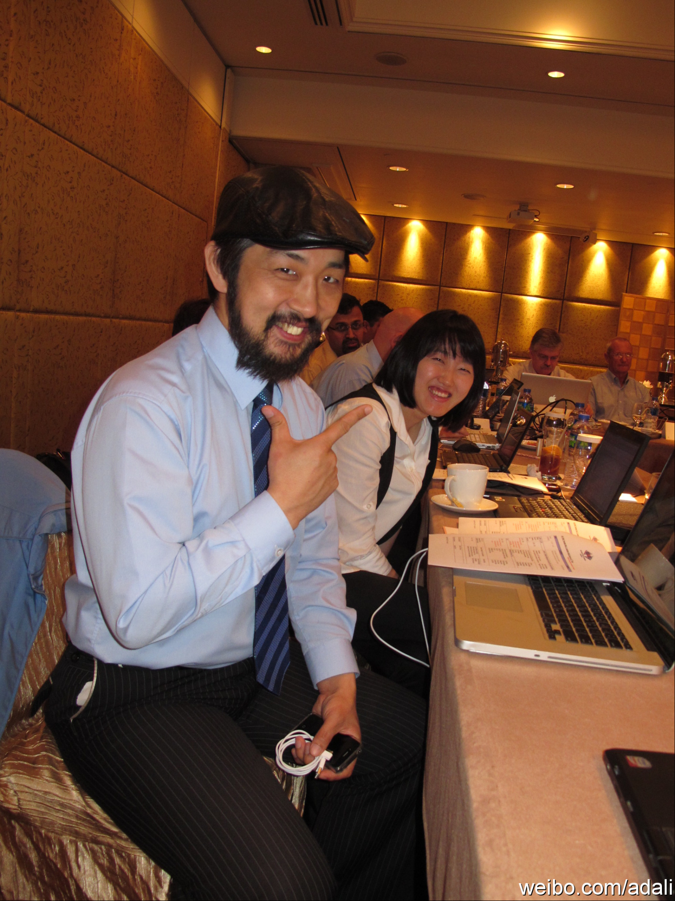

真是领教了，香港的iPad2正规渠道已经卖断货了。要买就是从黄牛手里加价买了。遇到个南韩过来的Java User Group leader加价也买，说在韩国iPad2数量少，买不到。产品做到这种程度，也难怪这么多人研究。@沈卓立TouchChina:晚上去了趟三里屯苹果店，明天上午发iPad2，现在已经有几百人在门口排队了。全世界果粉都一个样
javacommunity.org 这个域名被韩国拿去了。来自韩国的Kamus说组织活动面临的困难有三个：招募到人来参加活动；找赞助；找合格的讲师。这其实是所有活动都面临的问题，但民间组织者遇到的困难更大些。 
通常公司会给社区领导者，社区知名人士一些荣誉称号，甲骨文的ACE, 和Sun的Java Champion都是这种类型，现在都归到一起了。这两种称号，有相似的地方，也有区别。在我看来，区别就是Java社区的高度自治。
回复@郑昊_bluegene:我对这个话题也有兴趣，正准备尝试写一篇“社区领导是怎么练成的？”，观察和总结一些社区领导的道路。 //@郑昊_bluegene:这些社区领导者是如何产生的@Ada李力:通常公司会给社区领导者，社区知名人士一些荣誉称号，甲骨文的ACE, 和Sun的Java Champion都是这种类型，现在都归到一起了。这两种称号，有相似的地方，也有区别。在我看来，区别就是Java社区的高度自治。